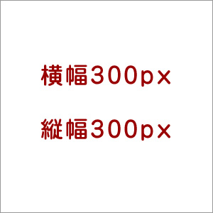
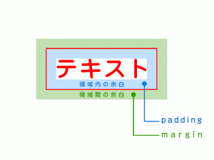

色指定
文字サイズ指定
フォントの種類を変更する
イタリックの太文字
文字に線を引く
リンクのコントロールのスタイル文字の配置位置中央
むかしむかしあるところに、おじいさんとおばあさんが住んでいました。おじいさんは山へ柴刈りに、おばあさんは川へ洗濯に行きました。おばあさんが洗濯をしていると、川の向こうからドンブラコ、ドンブラコと大きな桃が流れてきました。
むかしむかしあるところに、おじいさんとおばあさんが住んでいました。おじいさんは山へ柴刈りに、おばあさんは川へ洗濯に行きました。おばあさんが洗濯をしていると、川の向こうからドンブラコ、ドンブラコと大きな桃が流れてきました。
むかしむかしあるところに、おじいさんとおばあさんが住んでいました。おじいさんは山へ柴刈りに、おばあさんは川へ洗濯に行きました。おばあさんが洗濯をしていると、川の向こうからドンブラコ、ドンブラコと大きな桃が流れてきました。
I love the ThinkPad from IBM.
I love the ThinkPad from IBM.
むかしむかしあるところに、おじいさんとおばあさんが住んでいました。おじいさんは山へ柴刈りに、おばあさんは川へ洗濯に行きました。おばあさんが洗濯をしていると、川の向こうからドンブラコ、ドンブラコと大きな桃が流れてきました。
背景色の変更

floatで画像を右寄せに指定し、文字を回り込ませます。
テキストテキストテキストテキストテキスト
テキストテキストテキストテキストテキスト
このようにBOXの中にテキストを入力すると、指定した横幅で文書が折り返されて表示されます。
marginの余白の調整サンプル
paddingのサンプル
テキストテキストテキストテキストテキスト
子セレクタのテスト
子セレクタのテスト